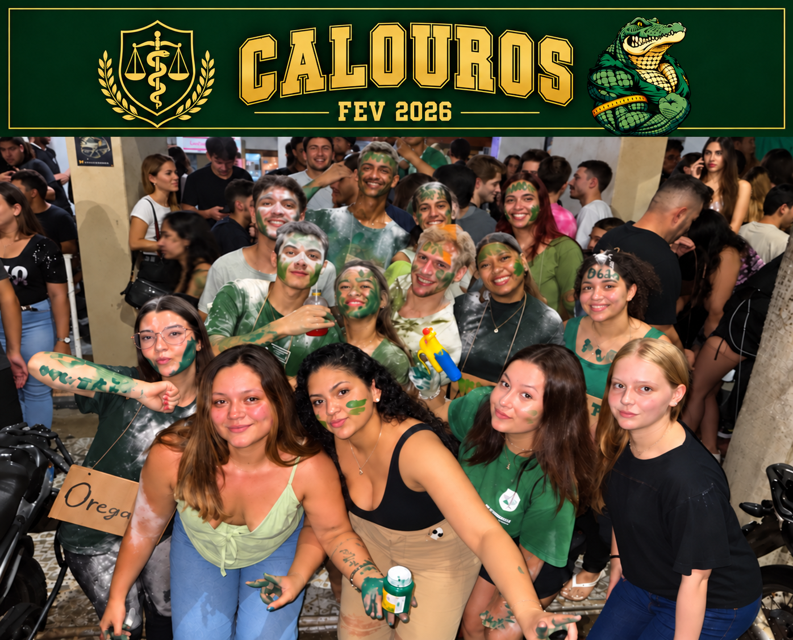

Quem somos
Mais que um time.
Uma comunidade.
Um espaço para aproximar estudantes, fortalecer o sentimento de pertencimento e criar experiências durante a graduação.
Sobre nós
Uma comunidade que une estudantes de Nutrição pelo esporte e pela amizade.
Quero fazer parte
Quem somos
Um espaço para aproximar estudantes, fortalecer o sentimento de pertencimento e criar experiências durante a graduação.
Conexões que atravessam a sala de aula.
Esporte, participação e espírito de equipe.
Representar a Nutrição com energia.
Modalidades
Força e sintonia em quadra.
Velocidade e jogo coletivo.
Ritmo, agilidade e garra.
Superação em cada passo.
Compromisso social
Representar a Nutrição também é cuidar de quem está ao nosso redor. Por isso, a atlética promove ações beneficentes durante o ano todo, transformando a energia do esporte e dos eventos em ajuda real para instituições e famílias da região.
Campanhas com pontos de coleta no campus e nos eventos, com entrega a instituições.
Mobilização para reunir roupas e cobertores em bom estado antes e durante o inverno.
Ações de orientação sobre alimentação saudável conduzidas por estudantes de Nutrição.
Nosso histórico
Conheça nossas ações sociais e as vivências dos estudantes de Nutrição.
Ver todas as notícias ↗Transparência
Cada campanha segue o mesmo caminho, do planejamento à prestação de contas.
Escolhemos a causa, a instituição parceira e o que será arrecadado.
Divulgamos nas redes, nas salas de aula e nos eventos da atlética.
Pontos de coleta, inscrições solidárias e doações em campanha.
Levamos tudo à instituição e mostramos o resultado para a comunidade.
Participe
Não é preciso ser atleta para fazer parte da atlética e das ações solidárias.
Treine, compita e represente a Nutrição nas modalidades da atlética.
Ajude a organizar eventos, campanhas e entregas de doações.
Doe, divulgue ou torça: toda participação fortalece a comunidade.
Dúvidas frequentes
Não. Há espaço para quem quer treinar, mas também para quem prefere organizar eventos, ajudar nas campanhas, divulgar ou torcer.
A atlética reúne estudantes de Nutrição. Para saber como se associar e quais são as condições, fale com a diretoria pela página de contato.
As campanhas são divulgadas nas redes da atlética e na página de eventos. Depois de cada ação, compartilhamos o resultado com a comunidade.
Pode sim. Qualquer pessoa pode apoiar as campanhas: entre em contato para saber onde e como entregar a sua doação.
Apoie nossos projetos, fortaleça o esporte universitário e ajude a transformar ideias em oportunidades. Vamos construir essa história juntos!